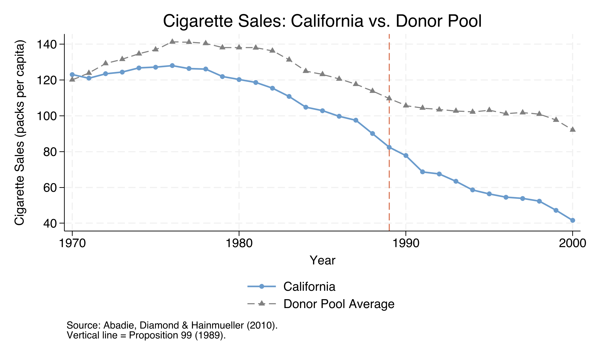
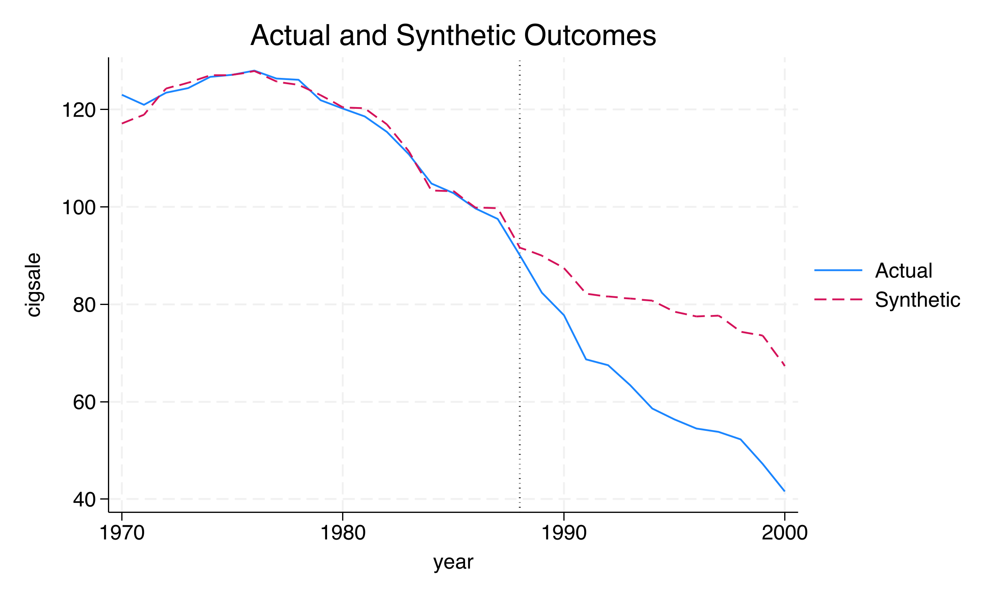
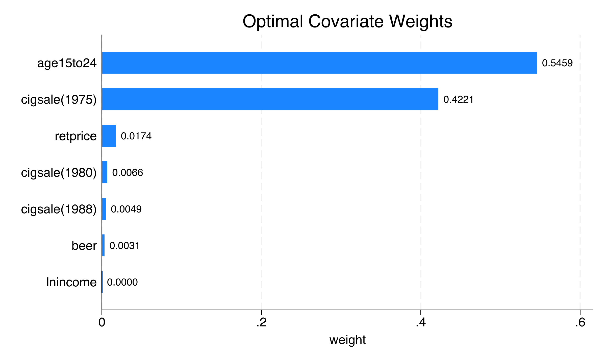
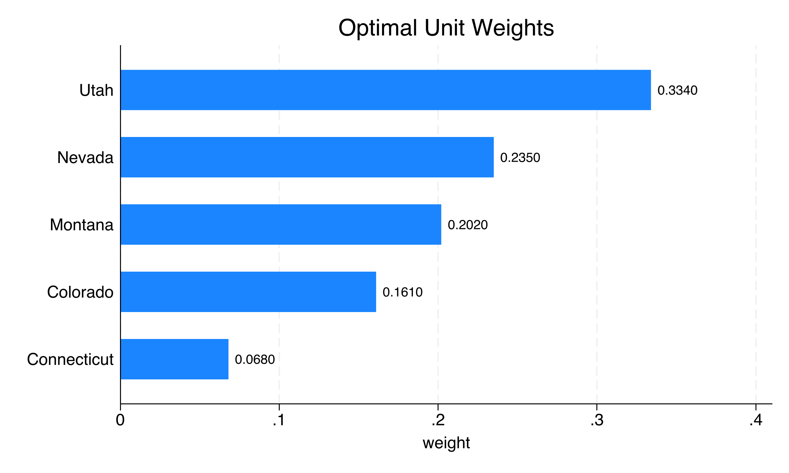
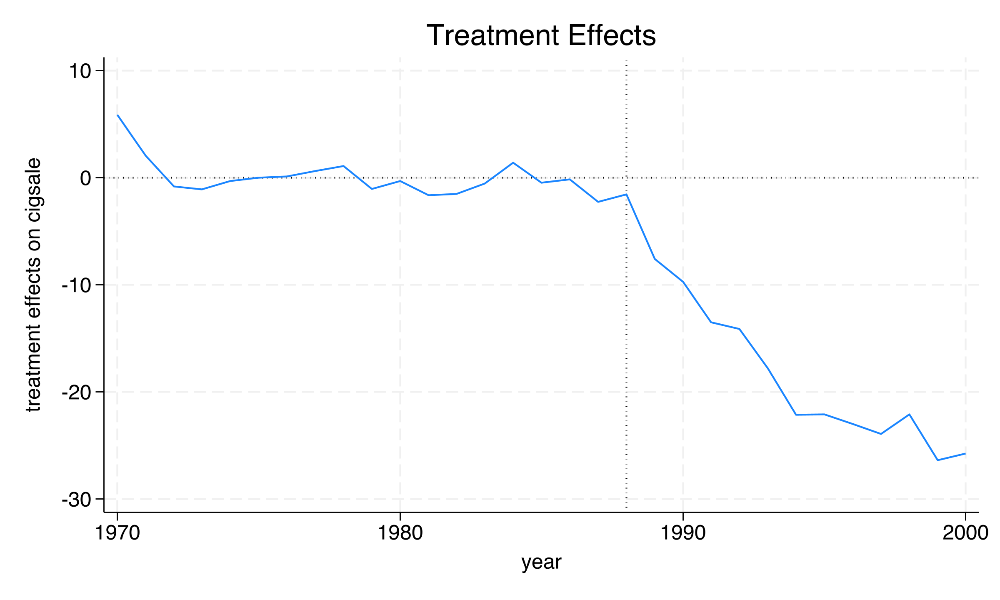
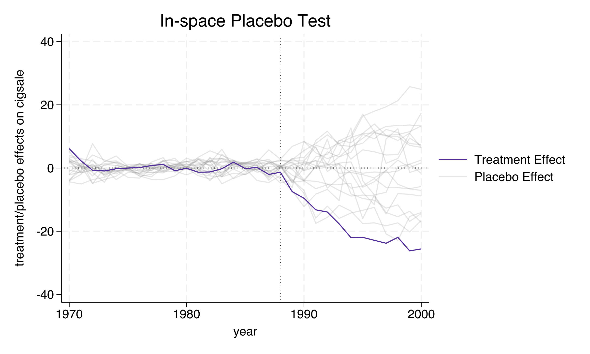
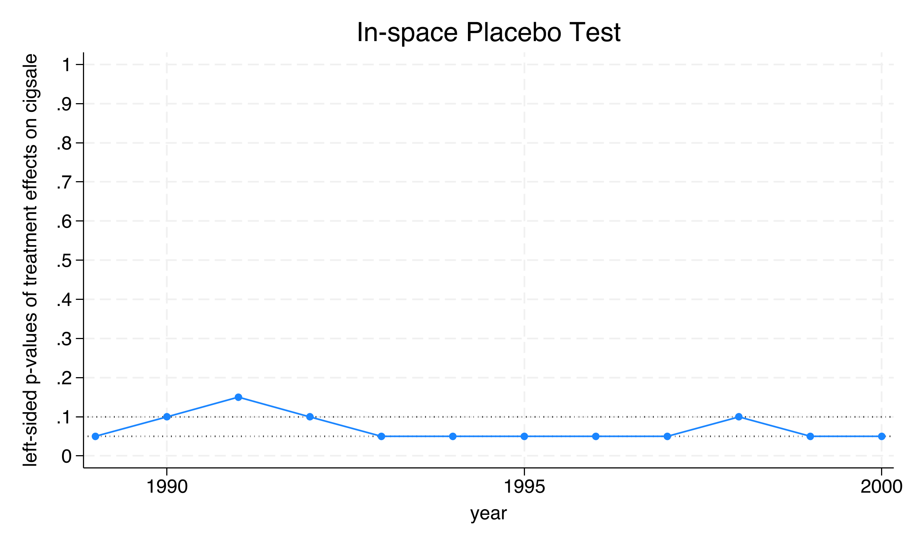
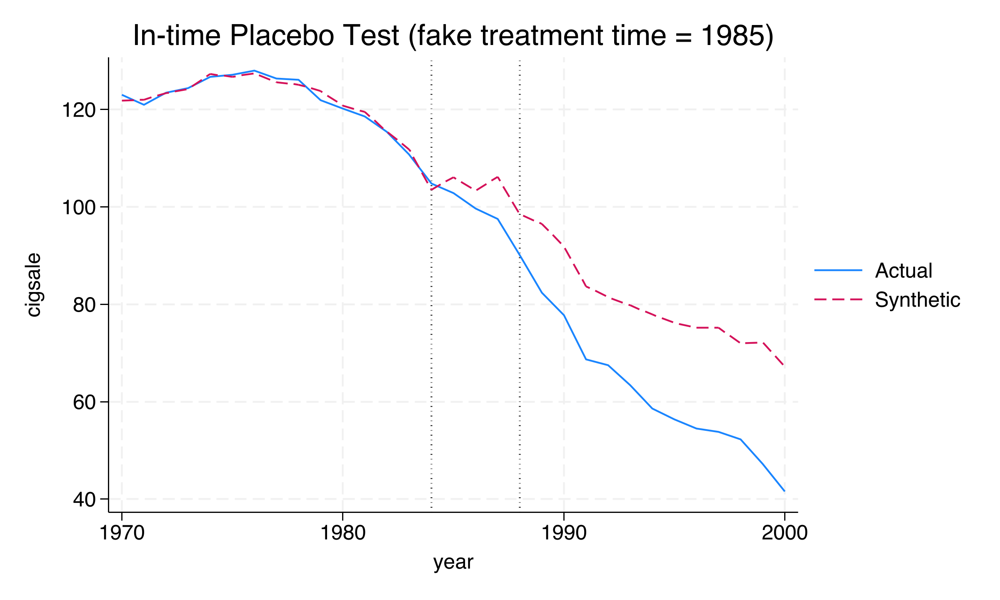
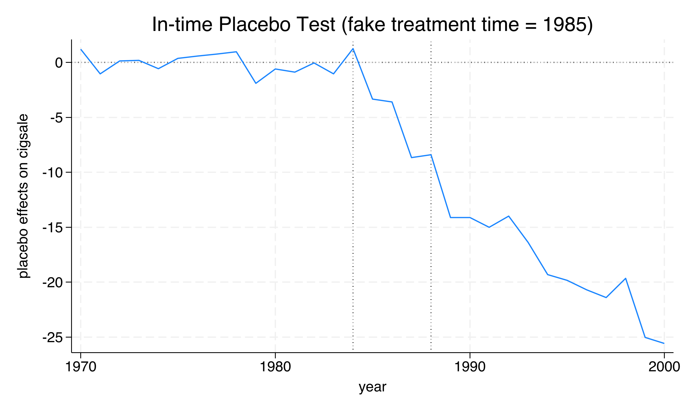
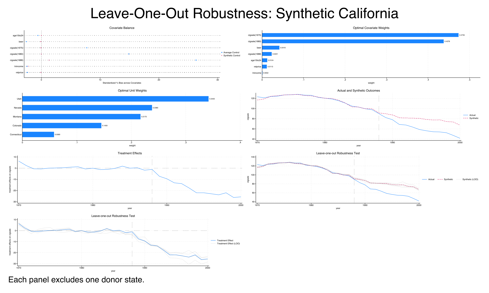

Did California’s Proposition 99 tobacco tax cut smoking?
Nagoya University (GSID)
June 11, 2026
Act I
In 1988, California voters passed Proposition 99: a 25-cents-per-pack cigarette tax plus funded anti-smoking education, effective January 1989.
But national smoking was already falling. What would California have done without the law?

Cigarette sales per capita: California (solid blue) vs. the unweighted average of 38 control states (dashed grey), 1970–2000. Orange line marks Prop 99 (1989).
synth2 — a weighted blend of donor statesAct II
cigsale, per-capita cigarette sales (packs)cigsale in 1975/1980/1988Strongly balanced: 1,209 observations, 19 pre-treatment years and 12 post-treatment years. The estimand is the ATT — the effect on California, the one treated unit — not the ATE.
\[\min_{W} \sum_{m=1}^{M} v_m \left( X_{1m} - \sum_{j=2}^{J+1} w_j X_{jm} \right)^2\]
Pick donor weights \(w_j \ge 0\) that sum to one and match California’s predictors \(X_{1m}\).
The weights \(v_m\) set how much each covariate matters.
The synthetic control is a convex combination of real states — no extrapolation beyond the donor pool.
\[\hat{\tau}_t = Y_{1t} - \sum_{j=2}^{J+1} w_j^* Y_{jt}\]
The effect in year \(t\) is California’s actual sales minus the synthetic’s prediction. A negative \(\hat{\tau}_t\) means Prop 99 lowered sales.
Identification rests on good pre-treatment fit, no interference, and no anticipation — assumptions you can largely inspect, not just assume.
synth2 call fits the baseline synthetic controltrunit(3) = California · trperiod(1989) = treatment year · nested = outer V / inner W · allopt = multiple starts to dodge local optima.

California actual vs. synthetic California, 1970–2000: near-indistinguishable before 1989, then a widening gap.

Predictor (V-matrix) weights: how much each covariate drives the SCM optimization.

Donor weights: the five states that compose synthetic California (33 others get exactly zero).
−19.0
average ATT, packs per capita / yr (1989–2000); −7.6 in 1989 deepening to −26.4 by 1999

Treatment effect (actual minus synthetic California) over time; the negative gap widens after 1989.
Act III
| State | Pre MSPE | Post/Pre MSPE |
|---|---|---|
| California | 3.17 | 123.5 |
| Georgia | 1.46 | 80.0 |
| Virginia | 2.78 | 79.0 |
| Missouri | 1.20 | 70.9 |
The post/pre MSPE ratio asks: how much worse does fit get after 1989 than before? California’s is highest by far.

Treatment effects for all states: California (bold) plunges away from the tight grey band of placebo gaps near zero.
0.026
in-space placebo p-value, all controls (1/39); p = 0.05 after the cut(2) fit filter (1/20)

Left-sided Fisher exact p-values over time (left-sided, because the effect is negative): p = 0.05 in most years.

In-time placebo: California actual vs. synthetic with a fake treatment at 1985. Lines stay close through 1988, then split after the real 1989 policy.

In-time placebo effect: small gaps during the fake 1985–1988 window, large gaps after the real 1989 treatment.

Leave-one-out: synthetic California’s prediction stays similar whichever weighted donor state is dropped.
Objection. A flexible, data-driven counterfactual still can’t manufacture identification.
Response. Correct. The ATT is credible only under no interference, no anticipation, and good pre-treatment fit — SCM makes the last one visible and disciplines the comparator, but it cannot rule out cross-border shopping or an idiosyncratic donor (e.g. Utah’s distinct smoking norms). It also gives no standard errors; inference rides entirely on the placebos.